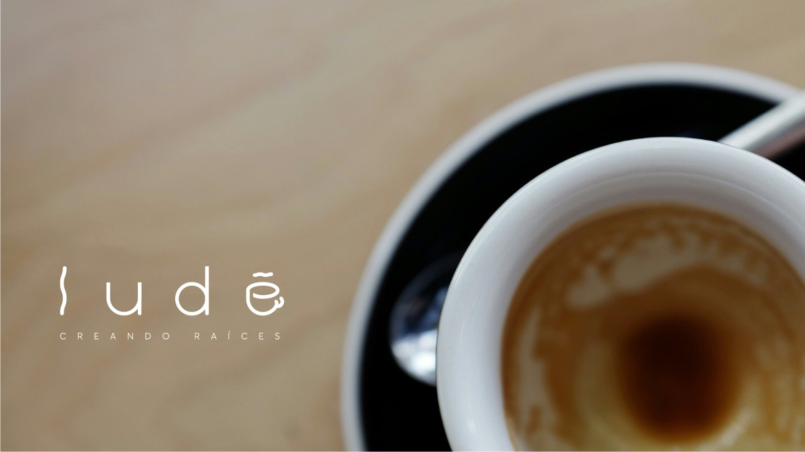
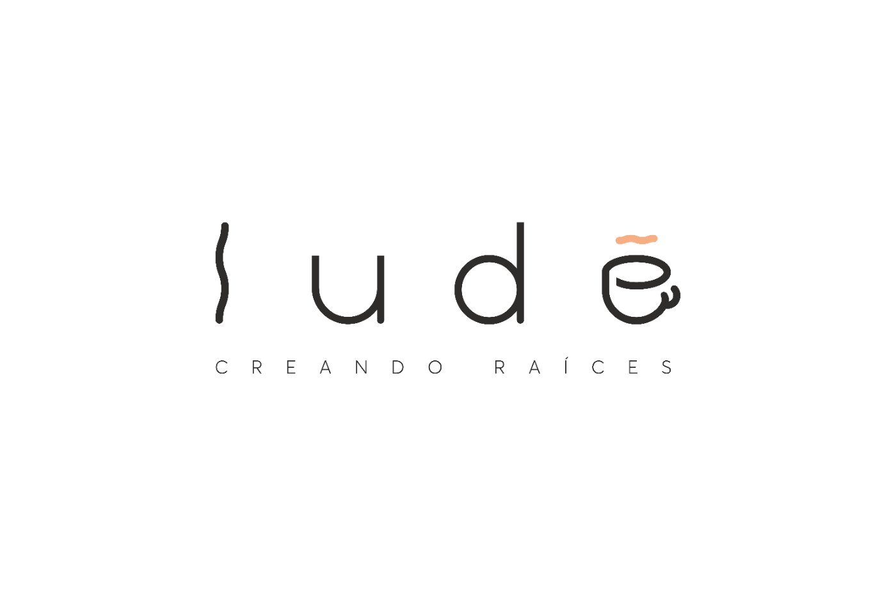
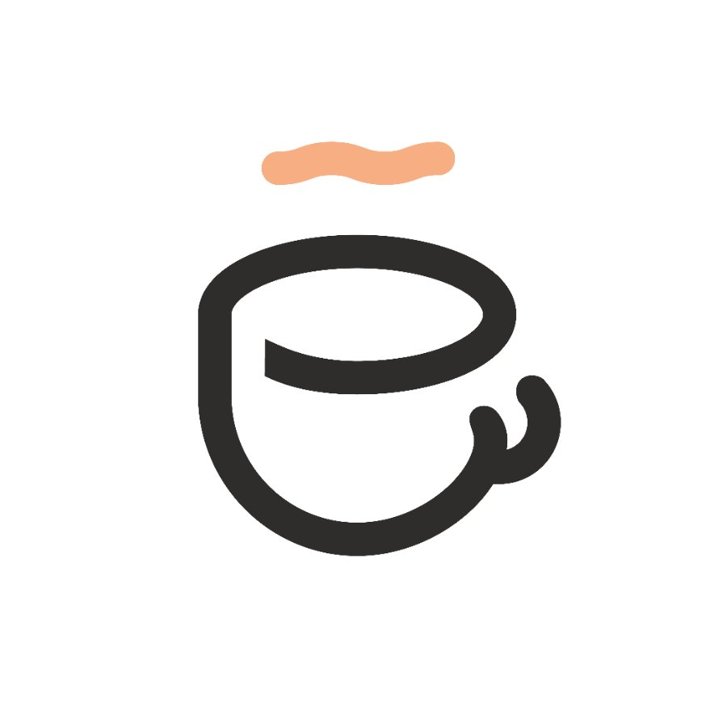
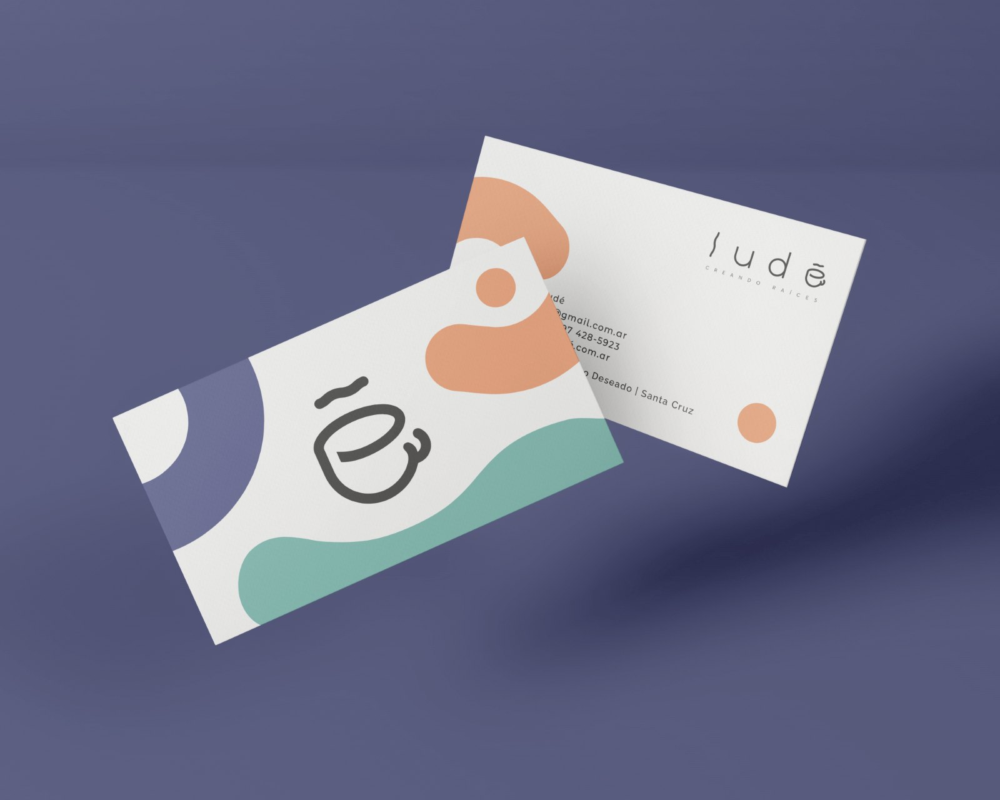
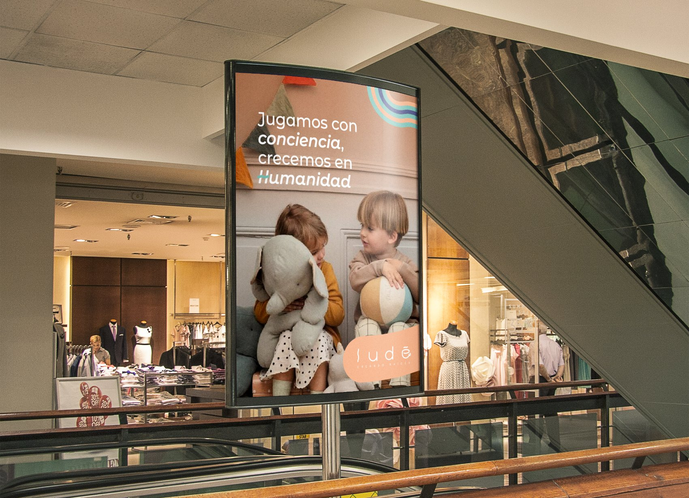
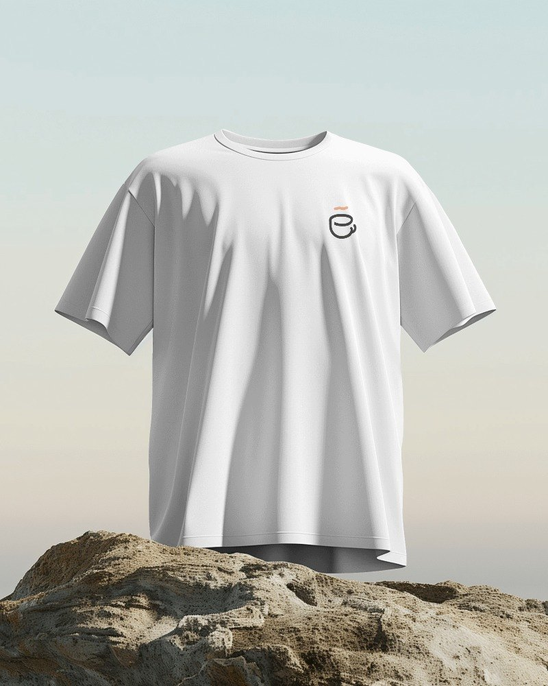
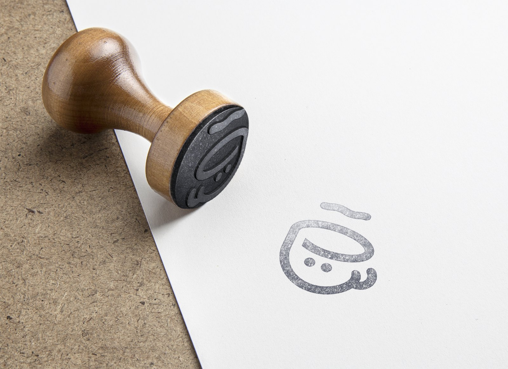
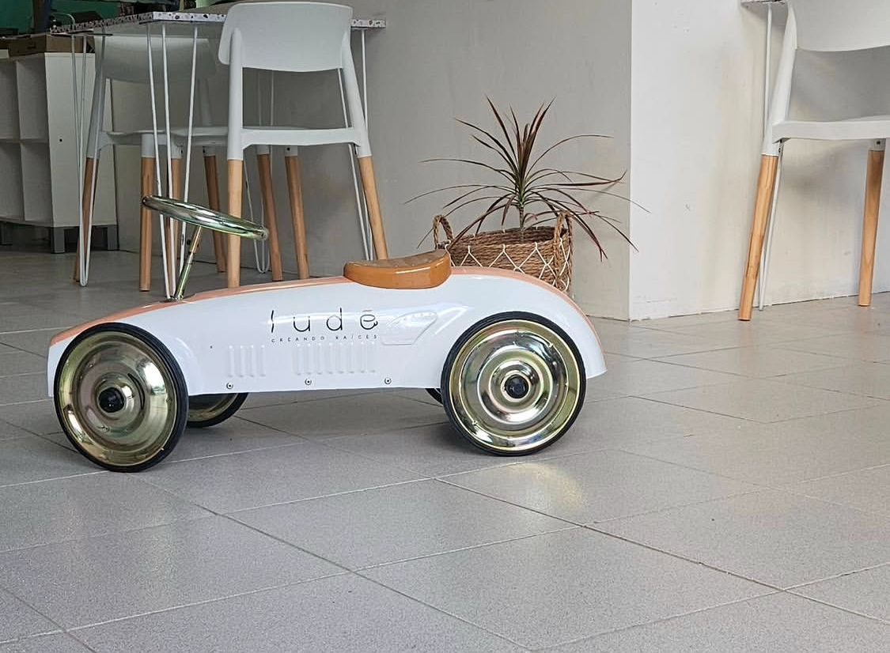
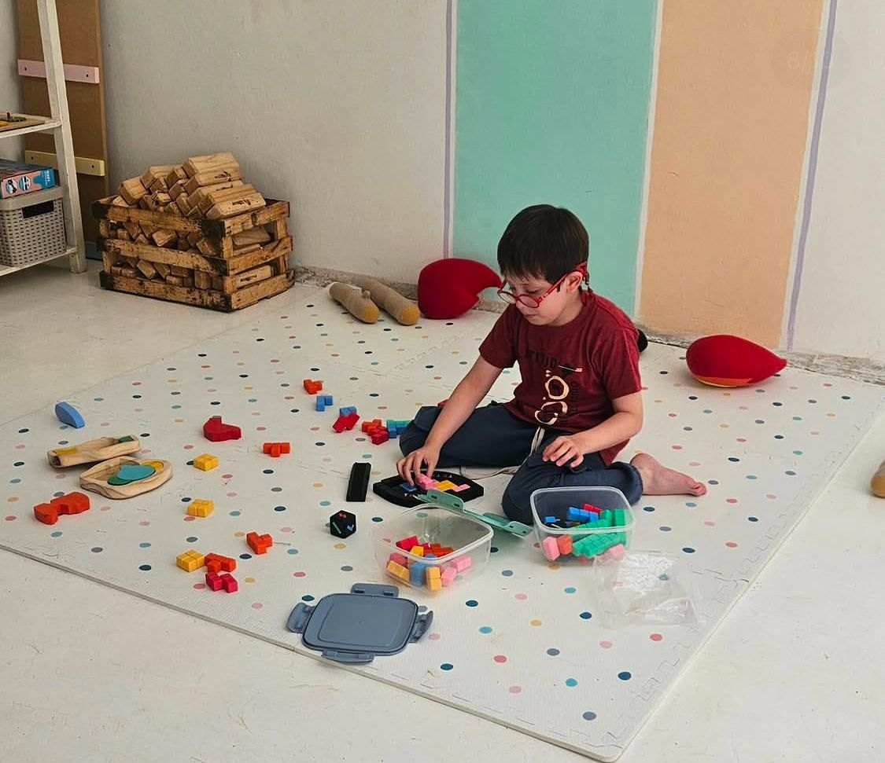
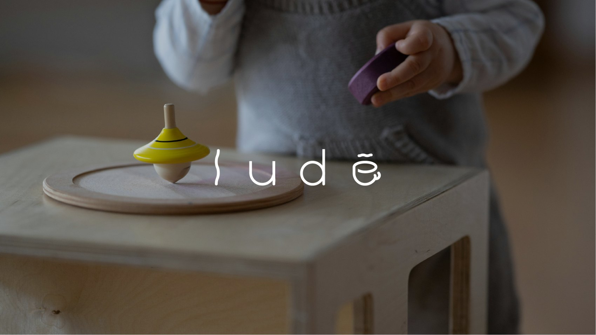

Una marca que nació de una hoja en blanco: un espacio de juego libre y café donde las familias crean raíces.

No había marca vieja que arreglar. No había nada. Solo una idea en la cabeza de una emprendedora patagónica.
En Puerto Deseado, Santa Cruz, una clienta quería abrir algo que su ciudad no tenía: un espacio donde los chicos jugaran libres —lejos de las pantallas— mientras los adultos disfrutan un buen café. El pedido fue directo al grano: el desarrollo completo de la marca, desde cero.
Lucía armó el equipo y me convocó junto a Nicole. Nos dividimos por áreas con dirección compartida: Nicole llevó concepto y marketing, Lucía paletas, fotografía y estrategia. Yo tomé el diseño base de la identidad — y el desarrollo de logotipo que la clienta eligió fue una de mis ideas.
Cuando el papel está en blanco, el riesgo no es quedarse corto — es volar por las nubes.
La tensión más dura fue interna: con libertad total, el equipo se iba hacia conceptos que el negocio nunca iba a poder sostener. Más de una vez hubo que frenar y volver al centro: Ludé es café y juego. Punto. Esa disciplina definió todo lo que siguió.
La segunda tensión era de diseño: un solo logotipo tenía que hablarle a dos públicos a la vez — la sofisticación adulta del café y la energía lúdica de la infancia — sin partirse en dos.
La respuesta está escondida en las letras: la E es una taza de café, y el acento, su humo.


La construcción está pensada en transmitir elegancia y simpleza. Se reemplazaron caracteres con elementos en movimiento para comunicar la conexión entre el juego, el servicio de cafetería y la familia.
Letra por letra: movimiento en la primera l, formas redondeadas para la infancia, inicios de palo seco que representan la adultez, el acento convertido en humo y la E transformada en taza de café.
Se abre y se convierte en una taza vista de perfil. El café deja de ser un detalle del rubro y pasa a ser la letra.
Deja de ser una tilde y se vuelve el humo que sale de la taza. Un solo trazo hace dos trabajos a la vez.
Rectas de palo seco para la adultez, formas redondeadas para la infancia. Los dos públicos conviven en la misma palabra.
Un brandbook de 55 páginas que no describe piezas: deja la marca lista para operar sin nosotros.
La promesa, escrita en el manual: ser el espacio de juegos valorado por las familias, con un entorno seguro física y emocionalmente, y el juego libre como forma esencial de desarrollo y aprendizaje. Cuando una familia entra a Ludé tiene que sentir que el lugar es cálido, divertido, enérgico, profesional, transparente y amigable.
Propósito, promesa, tono, territorios de comunicación, prohibiciones de uso, estilo fotográfico y aplicaciones — de la tarjeta personal a la vía pública, de los vasos a la indumentaria. Todo especificado para que cualquier persona pueda sostener la coherencia.




Ludé abrió sus puertas en Puerto Deseado. La paleta en las paredes, el logotipo en los juguetes, la calidez en cada rincón — la marca dejó el papel y se volvió un lugar.



La propuesta tuvo aceptación inmediata — la clienta quedó maravillada y nos compartió todo el proceso de preparación y pre-lanzamiento.
Ludé existe y funciona: su primera sucursal está abierta, y la identidad se ve reflejada en la implementación del espacio.
Una marca que arrancó siendo una idea sin nombre hoy tiene propósito, sistema, brandbook — y un lugar donde las familias crean raíces.
Aprendí que la libertad total no es el regalo que parece.
Con una hoja en blanco, el trabajo más difícil no fue proponer: fue frenar al equipo y traer todo de vuelta a lo que el negocio podía sostener.